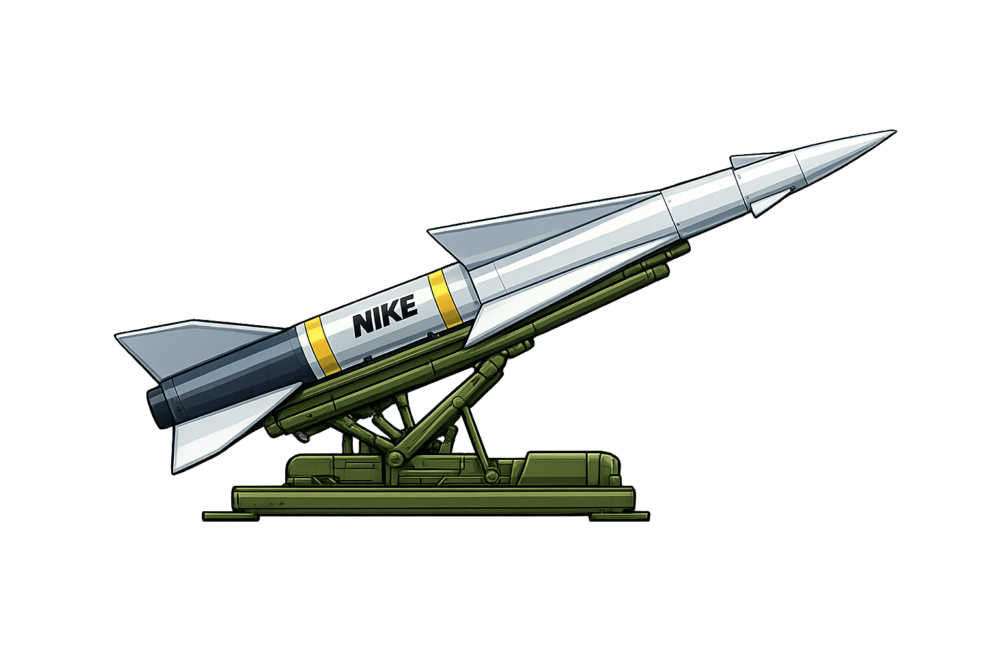

Interactive Site Map
Map | Cold War | Air Defense
Open the interactive map showing former Nike missile locations and zoom through the full network.

Modern Era Reference
A landing page for the Cold War air-defense network built around Nike missile batteries and associated site references.
Nike missile batteries were a central piece of U.S. Cold War air defense, built to counter bomber threats before later missile-defense systems and different strategic assumptions took over.
This subsection groups the map view and supporting site reference material into one entry point.

Map | Cold War | Air Defense
Open the interactive map showing former Nike missile locations and zoom through the full network.